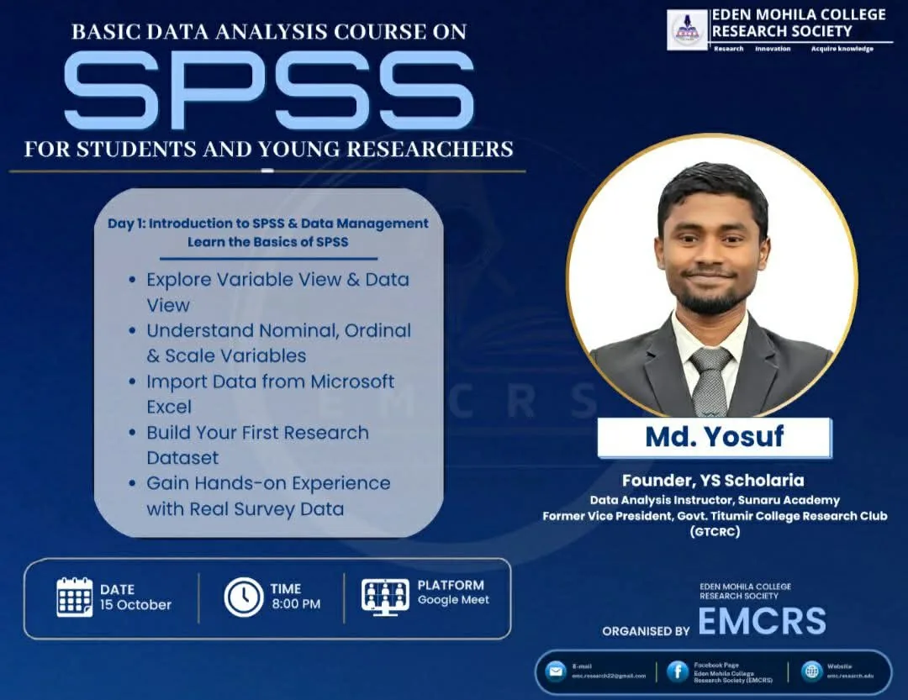

Govt. Titumir College Research Club (GTCRC), Dhaka, Bangladesh
Facilitates structured training workshops on research methodology, quantitative data analysis (SPSS, Stata) and academic writing for undergraduate club members.
Designs course materials, leads hands-on data sessions and mentors students as they develop research proposals and scholarly manuscripts.
Founded and runs an academic and career service for students and professionals: CVs, cover letters, LinkedIn profiles, statements of purpose, thesis consultation, research proposals, report writing, SPSS and Stata analysis, survey analysis and website design.
Builds on four years of CV writing, with more than 50 CVs prepared, and on research and data-analysis teaching.
Eden Mohila College Research Society (EMCRS), online on Google Meet
Taught “Basic Data Analysis Course on SPSS for Students and Young Researchers”: three days, six sessions and about seven hours in total, starting on 15 October 2026. Nearly 60 students attended.
Day 1 covered Variable View and Data View, nominal, ordinal and scale variables, importing data from Excel, building a first research dataset and hands-on practice with real survey data.

Course poster issued by the Eden Mohila College Research Society.
–
Academic Instructor (part-time)
Rubel’s Economics Method, Dhaka, Bangladesh
Taught undergraduate years 1–3: basic and intermediate microeconomics, macroeconomics, statistics, mathematics, research methodology and econometrics.
Designed structured lesson plans, ran interactive tutorial sessions and mentored students individually on exam preparation, assignments and research projects.
Accident Research Institute (ARI), Bangladesh University of Engineering and Technology (BUET), Dhaka
Drafted research proposals and technical reports on road accident causation, pattern analysis and public safety intervention strategies.
Conducted systematic literature reviews to support study design, keeping structured reference databases in Zotero.
Completed the ARI-BUET certified course Fundamentals of Research Methodology (March–May 2025) during the internship. See Certifications.
Field data collection, road traffic accident study
Accident Research Institute (ARI), BUET, Dhaka
Study: Psycho-social Effects of Road Traffic Accident Victims, Poor Disabled Persons and Their Families
Collected primary data at two sites in Dhaka: the National Institute of Traumatology and Orthopaedic Rehabilitation (NITOR) and the Mohakhali Korail Bosti settlement.
Administered structured questionnaires and held bedside interviews with road accident victims and their families in the NITOR wards.
Ran household surveys in Korail Bosti to capture the socio-economic and psycho-social effects on poor disabled persons and their families.
Social Science Research Council (SSRC), Planning Division, Ministry of Planning, Bangladesh
Project: Overweight Girls and Maternal Health Hazards: A Study among Urban Adolescent College Students in Dhaka City
Authorised by letter from the project’s lead, a lecturer in the Department of Sociology, Bangladesh University, Dhaka, to collect the first and second instalment cheques from the SSRC office. The letter is shown below.
Supported project documentation, progress reporting and coordination of research activities.
Research Assistant
Bangladesh Medical Research Council (BMRC), Dhaka, Bangladesh
Project: Socioeconomic Disparities in Maternal Cardiovascular Health: Investigating the Role of Socioeconomic Determinants
Authorised in writing as research assistant for Consult-aid Bangladesh, to carry out project work for the Bangladesh Medical Research Council. The authorisation letter is shown below.
Contributed to field data collection, research implementation and activity reporting in line with BMRC protocols.